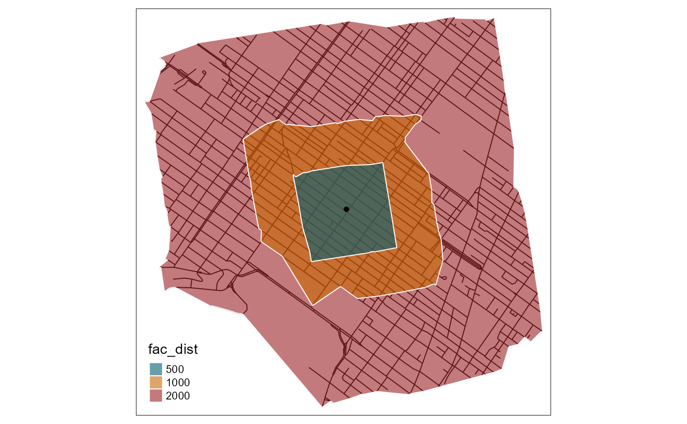
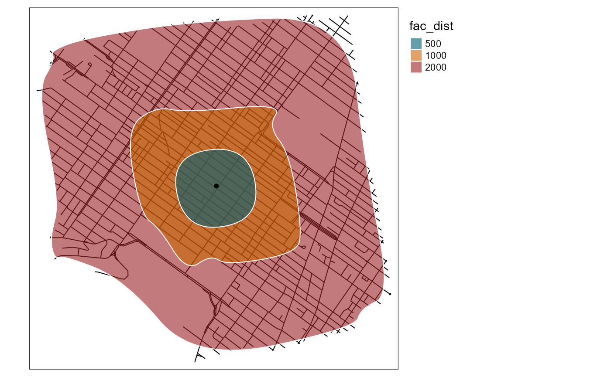

An isochrone is a geometrical representation of the area that can be reached for a starting on a network within a given distance (in time or space units).
There are already several libraries to build isochrones with R
(opentripplanner, osrm, rmapzen,
etc.), but they are all based on OpenStreetMap data or on external API.
We propose here a simple implementation that can be used on a
geographical network read as SpatialLinesDataFrame.
We give here a simple example with the Montreal network dataset and calculate several isochrones from the centre of the dataset.
The first step is to load (or create) a geographical network and to have some starting points.
# first load data and packages
library(sf)
library(spNetwork)
library(tmap)
data(mtl_network)
# calculating the length of each segment
mtl_network$length <- as.numeric(st_length(mtl_network))
# extracting the coordinates in one matrix
coords <- st_coordinates(mtl_network)
center <- colMeans(coords)
df_center <- data.frame("OID" = 1,
"x" = center[1],
"y" = center[2])
df_center <- st_as_sf(df_center, coords = c("x","y"), crs = st_crs(mtl_network))
# then plotting the data
tm_shape(mtl_network) +
tm_lines("black") +
tm_shape(df_center) +
tm_dots("red", size = 0.2)The second step is to calculate the isochrones with the function
calc_isochrones. In this example, we use the length of a
segment as the weight but other values could be used. We also consider
that all the roads can be used in both directions (see parameter
direction)
iso_results <- calc_isochrones(lines = mtl_network,
start_points = df_center,
dists = c(500,1000,2000),
weight = "length"
)The results are reported as lines, which can be mapped.
# creating a factor and changing order for better vizualisation
iso_results$fac_dist <- as.factor(iso_results$distance)
iso_results <- iso_results[order(-1*iso_results$distance),]
tm_shape(mtl_network) +
tm_lines(col = "grey") +
tm_shape(iso_results) +
tm_lines(col = "fac_dist",title.col = "distance (m)",
palette = c("500"="#005f73", "1000"="#ca6702", "2000"="#9b2226"))+
tm_layout(legend.outside = TRUE) +
tm_shape(df_center) +
tm_dots(col = "black", size = 0.1)The lines are the most exact form of an isochrone because they depict exactly what parts of the network can be reached. However, isochrones are represented as polygons most of the time. We propose here some approaches to build some meaningful polygons for isochrones.
The best starting point is probably to calculate for each set of
points a concave hull. This is different from the traditional convex
hull and is more adapted to the irregular geometry of an isochrone. To
do so, we use the library concaveman
library(concaveman)
# identifying each isochrone
iso_results$iso_oid <- paste(iso_results$point_id,
iso_results$distance,
sep = "_")
# creating the polygons for each isochrone
polygons <- lapply(unique(iso_results$iso_oid), function(oid){
# subseting the required lines
lines <- subset(iso_results, iso_results$iso_oid == oid)
# extracting the coordinates of the lines
coords <- st_coordinates(lines)
poly_coords <- concaveman(points = coords, concavity = 3)
poly <- st_polygon(list(poly_coords[,1:2]))
return(poly)
})
# creating a SpatialPolygonsDataFrame
iso_sp <- st_sf(
iso_oid = unique(iso_results$iso_oid),
distance = unique(iso_results$distance),
geometry = polygons,
crs = st_crs(iso_results)
)We can now map the obtained polygons.
# creating a factor and changing order for better vizualisation
iso_sp$fac_dist <- as.factor(iso_sp$distance)
iso_sp <- iso_sp[order(-1*iso_sp$distance),]
tm_shape(iso_results) +
tm_lines(col = "black")+
tm_shape(iso_sp) +
tm_polygons(col = "fac_dist",title.col = "distance (m)",
palette = c("500"="#005f73", "1000"="#ca6702", "2000"="#9b2226"),
alpha = 0.6, border.col = "white") +
tm_shape(df_center) +
tm_dots(col = "black", size = 0.1)
This is more similar to classical isochrone maps. Another possible
enhancement would be to simplify and smooth the limits of the polygons.
To do so, we will use the functions st_simplify from
sf and smooth from smoothr.
library(smoothr)
simple_polygons <- st_simplify(iso_sp, dTolerance = 50)
smooth_iso <- smooth(simple_polygons, method = "chaikin",
refinements = 5)
tm_shape(iso_results) +
tm_lines(col = "black")+
tm_shape(smooth_iso) +
tm_polygons(col = "fac_dist",
title.col = "distance (m)",
palette = c("500"="#005f73", "1000"="#ca6702", "2000"="#9b2226"),
border.col = "white",
alpha = 0.6) +
tm_shape(df_center) +
tm_dots(col = "black", size = 0.1) +
tm_layout(legend.outside = TRUE)
The shapes are cleaner for mapping but the results are not exact anymore.